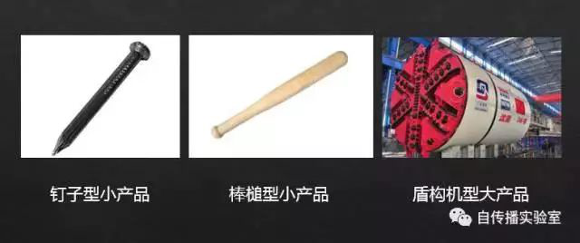
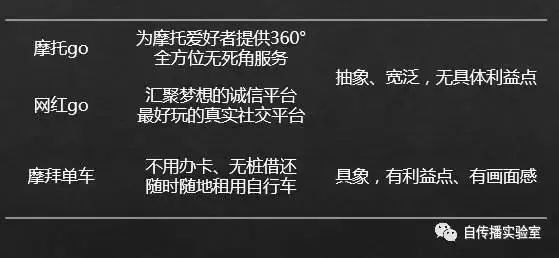

产品定位明确，是一切的基础。
很多人都读过《定位》一书，对“定位，就是让你在潜在客户的心智中与众不同”这句话并不陌生，但当实际操作起来，却鲜有人能手到擒来、拿捏准确的。
为了把这个事情说清楚、易于理解，我们姑且做个比喻：如果把产品在市场上打开局面比作在岩石上“凿洞”，那从功能定位的角度，可以将产品分为三类：

钉子型小产品
产品主打一个功能，做得很锐利
顶部很尖像一根钉子
虽然产品不大
但从小点突破，因而可以凿出个小洞
棒槌型小产品
产品主打多个功能
每一个都做得很一般
功能堆起来使得顶端跟棒槌一样粗
所以很难扎进去
盾构机型大产品
一个产品经过发展
已经拥有了足够的规模（比如日活数千万、上亿）
尽管也可能有多个功能
但由于知名度很高、母体输血足够
所以就像一台体看似笨重但威力巨大的盾构机
直径一二十米，也能开凿出大洞
很显然，对于小产品来讲，我们要做钉子，而不是棒槌。
然而，即使自己的产品定位模糊得像打了N遍马赛克，也很少有人能够清醒地认识并愿意承认自己是棒槌。经常会出现明明手里握着棒槌，却假想是拿着钉子，使劲抡锤往墙上钉。 毋庸置疑，再大的力气也是徒劳的。
那对于一个小产品的定位，究竟如何判断是钉子还是棒槌？
其实评价标准很简单，那就是“一句话能说清、一听就感兴趣”。
这句解释产品定位的话，并不是那辞藻华丽的、破费脑力的slogan，而是一句朴实的、说人话的描述。其中，“一句话能说清”，就说明你有个清晰的定位， 而“一听就感兴趣”说明你的定位能够提起用户的兴趣，表达了用户的利益点。
比如，摩拜单车就是个钉子型产品，因为它满足“一句话能说清、一听就感兴趣”。一句话说，摩拜单车就是能够实现“不用办卡、无桩借还，随时随地租用自行车”的手机app。 一打开产品的界面，就能看到附近密密麻麻的自行车，立马就了解是做什么的；“不用办卡、无桩借还、就地骑就地还”让用户感觉到比政府推广的“要办卡才能用、 必须到指定地点借还车”的公共自行车便捷很多，这就是最突出的用户利益。
下面，我们再来看几个我接触过的定位模糊、方向摇摆的棒槌型产品。
棒槌型小产品1：大而全的摩托Go
一个朋友做了一个为摩托车骑行爱好者服务的App，其产品定位以及具体功能点如下。
产品定位：摩托Go，为摩托爱好者提供360°全方位无死角服务。
产品功能：
计划时：你可以通过我们制定路书、购买保险、车辆保养以及准备物资；
在路上：你可以通过我们查询身边的补给站、维修点，记录感受，相约出行；骑行过程中将开启轨迹记录模式，会耗费手机电量，骑行结束后会自动关闭记录模式；
回味中：你可以通过我们数据导出、记录精彩，与好友分享，个人博物馆珍藏；
日常生活中：发现优质有趣的骑行活动、同好交友；获得摩托车一手资讯、车型查找、车辆运输保养、配件选购、法律咨询甚至于驾驶培训等等，你都可以通过我们实现。
产品界面：
其实当时他把产品拿给我，我一眼就觉得有问题——“产品界面上罗列多个tab、每个tab上又是多个功能块、一眼看不出是干嘛的”，这是个典型的all-in-one的棒槌型产品的特征。
再看产品的定位：“360°全方位无死角服务”，感觉到很霸气。产品设计者的初衷是好的，想全方位服务，但这样的定位其实跟没定位是一样的。这个定位只是“一句话说完”，而不是“一句话说清”。
一个新产品一上来就想提供“360度”、“全方位”、“无死角”的服务，从执行的角度来看，明显是不现实的。
我们再把上面列出的琳琅满目的产品功能大概分个类：车辆资讯 、交友、分享、路书、轨迹记录、保养、保险、配件选购、法律、驾驶培训。
可以看到，其中几乎每一个关键词，都能支撑起一个单独的产品。
我就告诉他一定要砍功能，把棒槌削尖变成钉子。只保留一个功能点，这个功能是用户急需而其他产品暂时无法满足的，即要“一句话能说清楚，一听就感兴趣”。
后来，我们就再没交流过这个产品了。直到一年多之后，我看到产品变成了这个样子。
产品定位：摩托骑行路线记录、路书分享
产品界面：
这次他才说，现在总算是找到了感觉，“路线记录、路书分享”才是摩托车爱好者们最急需的、而其他产品都没有提供的功能。
而且，产品界面一眼看过去，就知道是干什么的，满足了“一句话能说清，一听就感兴趣”的标准。经过一年多的试错和迭代，棒槌方才变成了钉子。
下来，再来看另外一个朋友的棒槌型产品“网红go”。
棒槌型小产品2：定位摇摆的网红go
这个朋友的合伙人是个唱吧App上的红人，凭借过人的唱功、帅气的外表、豪爽的性格，吸引了数十万忠实粉丝。后来，他们就想做个产品，将粉丝们的力量聚集起来，设计一个商业模式，让大家玩起来、赚起来。
下面看看这个产品是什么样的：
产品定位：一个汇聚梦想的诚信平台，也是最好玩的真实社交平台。
产品功能：
XX圈：会员可以发布图片文字，发表自己的心情，分享一些好的文章，会员之间还可相互打赏财币、评论、点赞。用所得的财币可以在超市里，愉悦地兑换自己喜欢的精美商品。 -收发财币乐翻天，精彩惊喜刷不停！
现场：打造正能量的娱乐视频直播节目，定期邀请各界名人明星在平台上做访谈及节目表演，现场与会员交流互动。 -明星大咖你来选，精彩直播齐互动！
聚宝盆：所有会员共同参与产品的构思、设计，共同完成产品的生产。以投票的形式确定产品类别，以方案递交的形式参与设计，以认购的方式参与生产，最终所有会员和平台共同销售自己的产品。 -集思广益造产品，携手共进创辉煌！
聊聊：会员可以结识志同道合的小伙伴、把互联网上的人们变成你现实生活中的朋友。
产品界面：
从产品定位来看，“一个汇聚梦想的诚信平台，也是最好玩的真实社交平台”比前面那个案例的“为摩托爱好者提供360°全方位无死角服务”更虚无缥缈。因此，“一句话能说清，一听就感兴趣”就无从谈起了。
其产品功能总体来说分为以下几类，这些功能在不同阶段分别处于主推位置：
直播：做直播没错，但问题是他们的主播只有一个人，就是该网红合伙人。后来估计觉得太单调，就找一些朋友来客串。即使这样还是有问题，因为只有一两个人的直播产品，是无法满足用户多样的口味的。
社交：做了个类似朋友圈的功能，粉丝们在里面发图片，大家可以点赞评论。我就问他用户为什么不直接在微信里面发，而要发到这里，他没有给出令人信服的答案。
众筹：发布自主品牌的电子产品，大家可以众筹，产品发布后可以自己用，也可以转卖赚钱。第一个产品是充电宝，说实话做得很不不错。朋友去深圳工厂前前后后盯了大半年，春节差点都没法过。不过销量非常有限，然后又逼着去开发新的硬件，而这个又不是他们所擅长的。这个方向做下去，更是无底洞了。
我们可以看到，这个产品的问题不光是“一句话说不清、一听没感觉”，而是产品方向多次大幅度摇摆。而最大的问题，他们没有把握住粉丝群的特征——这些人是因为音乐爱好聚集在一起的，但后来却又在做“直播”、“社交”、“众筹”等与之无关的方向。
上次跟这个朋友谈了好几个小时，希望他们能找到从棒槌变成钉子的道路。
从上面这两个棒槌型产品案例可以看出，尽管其产品定位一句话都能说完，似乎显得干净利落，但都过于宽泛、抽象。而一个满足“一句话能说清，一听就有感觉”的钉子型产品的定位，必然是很具象，甚至很有画面感的，并能直击用户某一个具体的痛点。

大型棒槌产品：定位有误的百度有啊
说完小产品、小业务，再来看看大产品、大手笔。
这里回顾下在2008年初，我刚加入百度时，参与开发的百度电子商务平台——“百度有啊”的产品定位问题。
百度有啊是百度进军电子商务领域的第一次尝试，尽管百度是大平台，但百度有啊是个独立的、与百度搜索业务并无直接关联的产品，因而并不能算得上盾构机型产品。（搜索导流并不算强关联，要不然百度里面能搜索到的所有业务都跟搜索有关联）
有啊当时在淘宝已经一家独大的情况下，却与其定位重合，一开始还是主打C2C。其平台的slogan“要购物先百度”，明显是没有站在用户角度思考问题，也不符合“一句话能说清，一听就感兴趣”的定位原则，没有体现出带给用户的独特利益。
尽管百度有啊在产品上做了一些创新，诸如订单聚合（将同一买家、买家、收货地址的订单自动聚合，方便买卖家处理订单）、商家虚拟与实物交易信用分开（避免用虚拟交易刷分后转实物交易的投机行为）等。但这些都属于微小的创新，不足以支撑一个平台的差异化定位，更无法让普通用户一下子就理解，从而产生动机来使用。
因此可以看出，百度有啊属于棒槌型产品，并且是一个巨型的棒槌型产品。
相比之下，京东重金自建物流而构建的“送货快”的差异化定位，就是满足“一句话能说清、一听就感兴趣”的条件。
试想，如果有啊当时选择避免与淘宝在C2C上正面交火，而直接做垂直品类的B2C，那还是有很大机会的。
但世上没有后悔药，尽管有啊后来转型做本地生活信息服务，还是重复犯了定位不明确的错误，即与58、赶集等领先的本地生活服务网站没有什么差异。
多次定位不清晰，使得百度电商的尝试不可避免地就走向了失败。
说完定位模糊的棒槌型产品的例子，我们再来看几个定位清晰的、较为成功的钉子型产品。
定位精准的钉子型产品
这里我们将这些钉子型产品分为两个类别，分别是“中小品牌：锐利的钉子型产品”和“大品牌：盾构机的初期阶段”。前者顾名思义、无需赘言，后者的意思是要看这个产品在最早期是如何定位的。尽管现在已经演变成了盾构机，但我们要看当初它还很小的时候，是如何以钉子的形态，打开局面的。
也就是说，“看大品牌的成功之处、向大佬学习，一定要看其早期的阶段怎么做的，而不要企图效仿人家已经很大的时候采用了何种策略”。
这是因为，当一个产品大了，的确会增加很多功能；一个品牌大了，也会做品牌延展，在这个品牌之下会增加新的产品甚至品类。
这就给很多人造成一种误解，说你看人家并没有“单点突破”、并不是“一句话能说清、一听就感兴趣”，不也很火嘛。
比如，他可能会说，你看，去哪儿网就是一个平台级产品，“提供国内外特价机票,酒店,旅游度假,景点门票产品一站式预订服务”，不是也挺成功的嘛。
于是，非常高兴地为自己的错误定位、模糊定位，找到佐证和借口。
然而，这个逻辑是错的。去哪儿的确很不错，但你不要看现在，而要看它最开始的产品形态。去哪儿起初是个旅游搜索引擎，让用户可以便捷地在线比较机票和酒店的价格。报价涵盖了航空公司和酒店的官网直销，也包括了大量的代理商，用户再也不用一个一个网站费劲地去看了。
去哪儿就是靠这个关怀用户钱袋子的单点功能实现突破，成为一个锋利的钉子型产品，后来逐渐发展成为一个大的平台产品，变成一个威力无边的“盾构机”。
的确，当用户量足够大，比如达到千万、上亿规模的时候，用户因为主打功能而来，长期使用之后，的确会感知到其他的功能，进而使用该功能的情况。
然而，即使是这样档次的大产品，大家也不要对“主打功能”对“附加功能”的导流能力期望过高。
这里，举一个国民级应用——微信的例子。众所周知，微信的主打功能无非是交流和分享，大家每天在上面花费好几小时的时间。其中，很多人每天都要刷朋友圈几十次，点击“发现→朋友圈”这个下意识操作也重复几十次。
但我现在问大家，你知道这“发现”里面，可以直接上京东购物吗？
我估计很多人都不知道，我之前也专门调研过很多朋友，大部分都不知道。你看，尽管这几年你点了几千上万次，你都不知道“发现→购物”的存在，更不用提使用了。
这就是一个典型的主打功能对附加功能导流有限的真实案例。
既然微信这么大的产品，“发现”功能使用这么频繁的情况下，“购物”入口都形同虚设，那你给产品堆那么多功能，把钉子变成棒槌，你以为用户就会看到，就会去用吗？
中小品牌：锐利的钉子型产品
下面用一个简单的表格来列一下一些中小规模的品牌，其品牌定位的情况以及隐含的用户利益。
大品牌：盾构机的初期阶段
再来看一些较大品牌，在产品初期时，其产品定位的情况。
从上面都可以直观地感受到，好的产品是满足“一句话能说清、一听就有兴趣”的条件的。
而且，好产品的定位往往还能“顾名思义”，即单单从产品命名上“顾名”就能“思义”、就能“有意”。
比如，大众点评（大家对商户点评）、猎豹浏览器（很快的浏览器）、今夜酒店特价（即刻订到特价酒店）、新辣道梭边鱼（梭边鱼火锅）、满记甜品（供应甜品）等等。
为什么要“一句话说清，一听就感兴趣”
这里，我们从“普适原理、企业和产品角度、用户感知角度”等三个方面，再一起思考下要做钉子型产品，必须满足“一句话能说清，一听就感兴趣”的深层次原因。
单点突破是普适原理
“一句话能说清，一听就感兴趣”，就是对“单点突破”进一步形象化的解释。我们发现，世间很多道理都是相通的，“单点突破”是一个普适的原则，单点突破蕴含的思想与产品营销领域之外的很多概念都相似。
类似于物理学中的压强原理。前面用钉子和棒槌来类比，也是基于此原理。物体所受的压力一定的情况下，受力面积越小，压强就越大，压力的作用效果就越明显。钉子能入木三分、宝刀可削铁如泥，均是遵照此原理。
顺应“少即是多”的哲学。德国建筑大师路德维希·密斯·凡德罗曾经提出“少就是多（Less is more）”的建筑设计哲学，主张去除多余繁缛的装饰，强调功能性。在产品、工作、生活的各个领域，“少即是多”都具有普遍的指导意义，启示我们要抓住主要矛盾，贪多反而会一事无成。
与“全面发展导致全面平庸”这种有关教育的观点一致。有的家长不顾孩子的兴趣，一股脑报了各种舞蹈、书法、绘画、音乐、英语、机器人、武术课外班。表面上孩子学了各式才艺，实质上都是蜻蜓点水、样样不精。
从企业和产品自身角度上来看
定位是所有的基础，没有明确定位，所有什么体验、运营、传播都是空中楼阁。
定位没找好，说明需求没把握好。需求抓不好，一切没得搞。
一个企业的人力物力资源有限，只有单点突破才有可能做好，这对于刚起步的小企业更是如此。
如果定位找好了，“一句话能说清，一听就感兴趣”，那么营销就容易做了——甚至把这句说人话的产品定位，作为主视觉放到海报上，都比一般的广告强。
从用户认知的角度来看
用户无时无刻都被广告和品牌淹没，一个品牌跟用户接触的时间以秒记。如果一句话说不清，那即使传播素材触达了，用户也记不住。
即使你的品牌成功进入了用户的脑海，别忘了脑子里有成百上千个别的品牌。而对于一个品牌，往往只能记住一个功能点。所以，想让用户记住一个产品有“三大功能、五大亮点”，那基本上都是痴心妄想。
“一听就感兴趣”，是从用户角度思考，体现了用户利益，用户只才会留意。
结语
产品定位明确，是一切的基础。但现实情况中，很多人没搞清楚这第一步，却着急忙着做推广、做PR。
对于一个新产品，如果只选择了一个功能单点突破，只要这个需求把握准了，就是一根有战斗力的钉子，“小而美”也有可能成功；而如果一开始就选择了“大而全”，即使其中的每一个功能的需求都把握得很好、体验也很顺畅，那也只是一根棒槌，用棒槌凿洞，很难取得成功。
用“一句话能说清、一听就感兴趣”的标准来评估，用逻辑分析和调研问卷的偏方来测试，都可以判断出是钉子还是棒槌，检测自己的产品定位是否有问题。
现在想想，你的产品是钉子，还是棒槌？
作者：朱百宁（微信公众号：自传播实验室），前百度品牌总监，著有《自传播》一书，现为多家知名企业培训导师及品牌顾问。